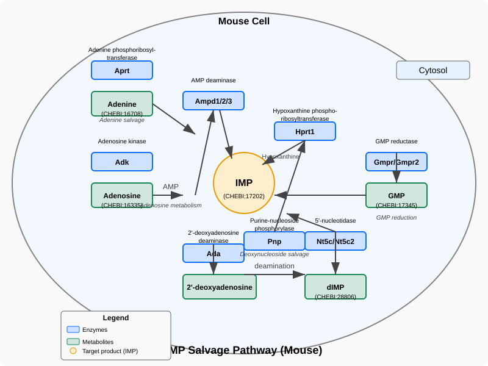

Figure: IMP salvage (Mouse)¶

This figure illustrates the IMP (Inosine Monophosphate) salvage pathway in mouse cells as described in the GO-CAM model. The pathway shows how various purine precursors are converted to IMP through multiple enzymatic reactions occurring in the cytosol. The diagram features three main input pathways: the adenine salvage pathway (via Aprt), the adenosine metabolism pathway (via Adk and Ampd enzymes), and the GMP reduction pathway (via Gmpr/Gmpr2). Additional paths include deoxynucleoside salvage through Ada, Pnp, and Nt5c/Nt5c2 enzymes. Each enzyme is shown with its gene symbol and enzymatic function, while metabolites are labeled with their common names and CHEBI identifiers where available.
Feedback from AI on figure:
{"feedback":"The diagram effectively illustrates the IMP salvage pathway in mouse cells with excellent clarity and scientific accuracy. The visualization presents a comprehensive view of the enzymatic conversions leading to IMP production, with well-organized spatial layout that clearly shows the relationship between different pathway components. The use of consistent color-coding (blue for enzymes, green for metabolites, and highlighted yellow for the target IMP) greatly enhances readability and allows quick identification of different molecular types. Text is appropriately sized and positioned to ensure readability throughout the diagram. The inclusion of chemical identifiers (CHEBI numbers) provides valuable reference information for specialists. The addition of pathway annotations helps viewers understand the functional organization of the pathways.","necessary_changes":null,"optional_changes":null}